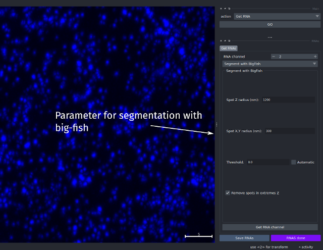
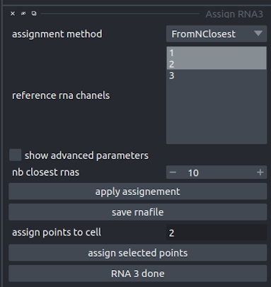
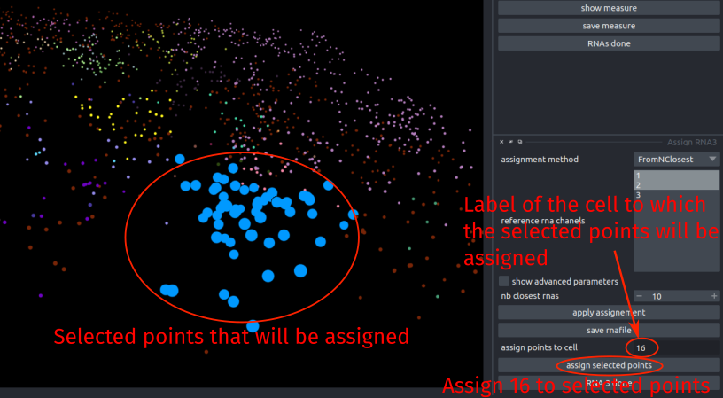
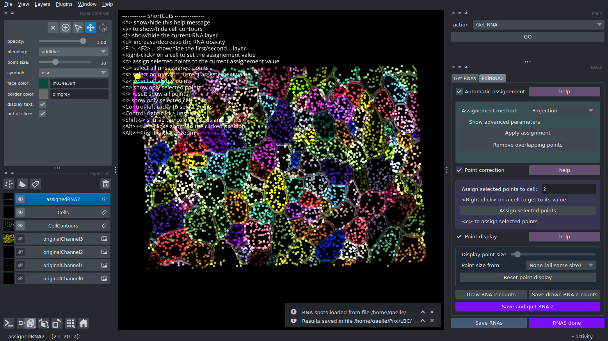
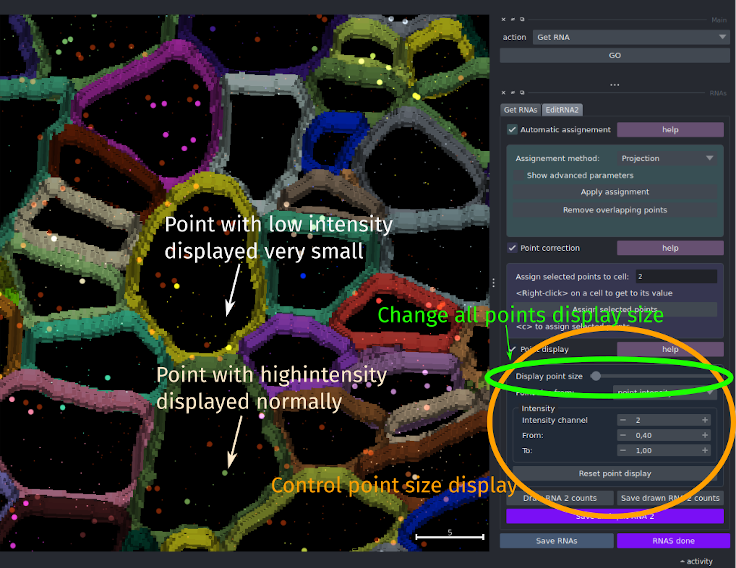
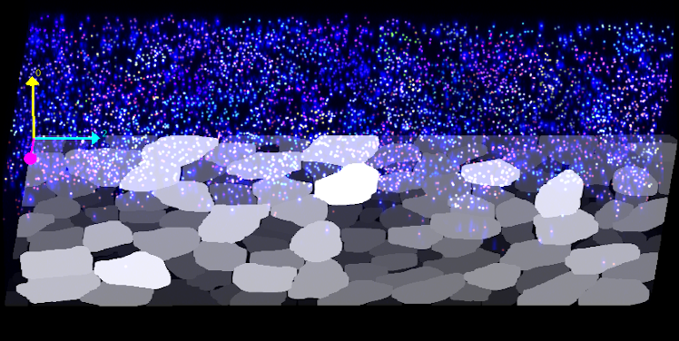
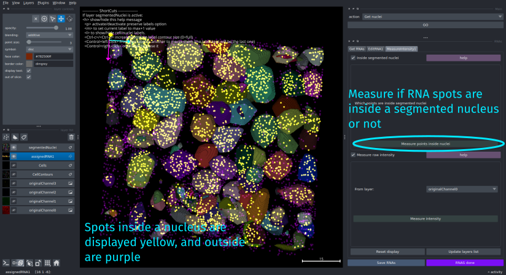
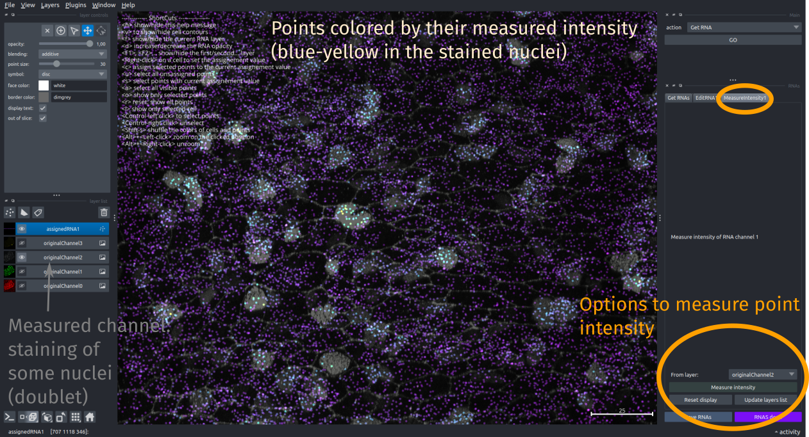

Segment&assign RNAs
Segment RNAs and assign them to their cell
Choose RNA:segment&assign in the main interface to run it
See the typical workflow of this step here
This step will first propose you to segment the RNA from one of the channels then to assign it to its corresponding cell. The cells must have been created before to do this assignment step, either with the Cells segmentation step, or loaded from previous file (by default the cells should be reloaded).
Since version 1.1.23, there is also an option to measure the intensity of a given layer/channel in the segmented spots (e.g. to measure if the segmented spots are inside nuclei, or correlates with some immuno-staining).
RNA segmentation
First, you have to select which channel of the images to analyze for RNA detection, by setting the rna channel parameter to the corresponding originalChannel* number.

Then, the segmentation of the RNA dots can be performed with Big-fish (Imbert et al. 2021). To correctly detect dots, big-fish needs the average size of an individual spot. As the spot resolution can be different in the Z-direction, the size of the spot should be specify both in XY and in Z. Put the average spot radius in the XY plane, in nanometers in the spotXYRadiusNm field, and the average spot radius in Z in nanometers in the spotZRadiusNm.
Big-fish filters the detected spots based on their mean intensity with a threshold. If you select automatic threshold, Big-fish will estimate and use this threshold. Otherwise you can specify a value in the threshold field. Note that after you run it one time on automatic mode, the value of the Big fish estimated threshold will appear in the threshold field, so that you can vary it around this value if the results are not satisfying.
Big-fish can sometimes find spots in the first and last slices when there is no real spots or signals. The option removeSpotInExtremeZ allows to get rid of these artefact spots. Un-select it if you have RNAs spots that you want to analyze even in the first or last slices.
When all the spots will have been detected, fishfeats will display them in a new Spots layer. To choose the size at which the spots will be displayed, change the drawing spot size parameter.
If the resulting dots do not correspond well with the RNA spots in your channels, you can run this step again changing either the dot size parameters or the threshold value.
You also have an option to load a previous segmentation if you already segmented the RNA in this channel. When you select this option, the load file parameter will appear and let you choose the corresponding file to load.
Applying preprocessing
In some cases, you might need to apply preprocessing to improve the results. If you want to apply other preprocessing that are not yet available in FishFeats, you can either work with another software with the required softwares and save the preprocessed nuclei in the input image, or work other napari plugins and use the option to start FishFeats from already opened layers. You can also contact us (filing an issue in this repository) to ask for the possibility to add a given preprocessing algorithm in FishFeats
RNA assignment
Assigning RNAs corresponds to attributing to each dot the same label as the cell we consider that it belongs to. Several methods can be used for an automatic selection, and manual assignment or correction can also be done.
Assignment methods:
-
Projection: assign each RNA to a cell by projection in Z. Thus, the assignment depends only on the X,Y position of the dot and on the junction segmentation. -
ClosestNucleus: assign each RNA to the cell of which the nucleus is the closest to the dot in 3D. The distance is calculated from the closest point of each nuclei to the RNA spot. -
MixProjClosest: assign each RNA either to the closest nuclei if the RNA spot is deep in z (closer to the nuclei) or by projecting it to the apical cells if the spot is close to the surface. -
Hull: to update -
FromNClosest: assign each RNA according to its n-closest RNA from other chanels already assigned. This finds the n-closest points (n is defined by thenb closest rnasparameter) and assigns to current RNA spot to the most represented cell among these neighboring points. You can select which reference RNA points to use for this (already assigned channels). In thereference rna channels, the list of already assigned RNA channels is given, and you can select as many as these channels as you want.
For example, in the image below, 2 channels (1 and 2) have already been assigned and are by default pre-selected to use for the assignment of the 3rd channel. Thus by keeping these parameters, for each point of channel 3, the program will look at the 10-closest points from channels 1 and 2. It will then assign to this point the cell identity that is the most present among these 10-closest points. If the majority of points are unassigned, the current point will also be unassigned.

Additional parameters
If you select the show advanced parameters option, you can also choose additional parameters to control the assignment method:
limit distance to assign micron: to apply a threshold of distance at which a point is still assigned to the corresponding cell/nucleus. When the calculated distance is above this threshold (in microns), the point will be unassigned.assign when above cells: if selected, then RNA dots that were found above the cells (so not in the cells) can still be assigned to a cell with the selected method. Otherwise, only spots that are below the apical cells surface will be assigned. If selected, you can also choose thenb z keep aboveparameter to control until how many Z slices above the cells RNA points are still assigned.filenameis the name of the file on which the RNA segmentation and assignement will be saved. It is advised to keep the default name as it is also the one that the program will look for to load it.
Click on apply assignment to launch the assignment method on the segmented dots. The dots will be all white during the calculation of the assignment. When the computation will be finished, they will be colored by their assigned cell. Dots with a maroon color, labelled "1" are unassigned, i.e. no corresponding cell was found.
RNA manual correction
To correct RNA assignment, select the point(s) to change the assignment value, put the value (label) of the cell to assign it to in the assign points to cell parameter field and click on assign selected points.

Options/shortcuts to correct the RNA assignment:
Shortcut/options
See napari Point layer documentation for more information on the point edition tools available by default in napari (and accessible in the top left panel of the interface)
| F1,F2,F3... | Show/Hide the first, 2nd, 3th.. layer (ordered in the bottom left panel from bottom to top) |
| v | Show/Hide cell contours layer |
| d | Increase/Decrease the RNA layer opacity |
| l | Show only the currently selected cell contour (or reset to show all cells). The layer "CellContours" must be visible |
| o | Show only the selected points. Move the Display point size bar to reset it |
| Get the label of the cell under the click and set the current assignment value ot it | |
| u | Select all unassigned points |
| s | Select all points with current assignment value |
| a | Select all visible points |
| c | Assign current assignment value to all selected points |
| Ctrl+ | To select points by drawing a rectangle around them while keeping the mouse clicked. Other points can be added to the current selection by doing the same elsewhere |
| Ctrl+ | Unselect the points |
| Alt+ | Zoom on the clicked position |
| Alt+ | Unzoom |
| Shift+s | Shuffle the colors of the cells and points |
The program locks the layers so that it is not possible to remove them by accident. It will print an error message if this happens. The lock will be released when clicking on RNA* done.

Point display
To further help with the manual correction of spots, FishFeats proposes an option to change the point size display.
Check the Point display box to expand its content in the Edit RNA interface on the right side of the window.
You can change the display size for all points by sliding the Display point size parameter bar, but you can also display some points at the current size, and hide other points by displaying them very small.
For this select the criteria to display a spot as big or very small, in the Point size from: parameter, and select the desired option.
The point can be displayed differently according to the intensity inside the point (point intensity) or from their assignment score (assignment score) which refers to the certainty of their assignment.
Click on Reset point display to display all the spots with the same size again, controlled by the Display point size parameter.

Save/load RNAs
When you click on save and quit RNA*, it will save the current point layer in a .csv file saved in the results folder called imagename_RNA*.csv (here * is the number of the corresponding channel).
The file contains the position of each spot and its assignment.
The counts of the RNA of this channel in each cell will be added to the results file in a new column.
The editing interface of the current RNA will be closed so that you can go to the next RNA.
To reload/continue the assignment later on, you can load this file in the segmenting RNA step by choosing load file in the segmentation method choice parameter.
When you click on save RNAs, it will automatically save all the RNA channel that have been done and udpate the results saved as well.
You can click this button at any time during the manual correction process, without stopping it.
We recommend saving regularly in case something happens during the correction steps.
Draw RNA counts
This option, at the bottom of the Edit RNA* interface, allows the cells to be visualized, colored by their number of assigned RNAs.
Click on Draw RNA* counts to add a new (2D) layer containing the cells ans their number of RNAs.
In each cell the intensity reflects the number of RNA assigned.

You can also save this image as a 2D file by clicking Save drawn RNA* counts.
The RNA counts can also be found in the results file, in the corresponding nbRNA_C*_MethodName column.
MethodName will be the name of the method used for the initial assigment.
The results file can thus contain the counts from several assignment methods, but note that when you reload it, it will load only the last used method.
Measure intensity
Select the onglet MeasureIntensity* to start this option
This option allows the intensity inside each segmented spot (RNA) in a chosen image channel or opened layer to be measured. It can also indicate for each spot if it is inside a segmented nucleus or not (you must have performed the nuclei segmentation before for that, see the nuclei segmentation step).
Inside segmented nuclei
You must have done the nuclei segmentation before to be able to use this option.
When clicking on Measure points inside nuclei, the plugin will evaluate for each segmented RNA spot if its center is inside a segmented nucleus or not.
The spots will then be displayed with a color indicating if they are inside a nucleus (yellow) or not (purple).

This value will also be added to the imagename RNA*.csv file in which the RNA results are saved, in a column called InsideSegmentedNuclei when you click on Save RNAs.
Measure raw intensity
At this step, usually only the originalChannel* channels are available, but you can open other layers (e.g. nuclei segmentation) if you want to measure it and click on update layers to have it added to the possible layers to measure.
Choose the layer/image to measure in From layer: parameter in the interface.
When you click, the intensity inside each spot (average of the pixels within a radius of 4 pixels of the spot position in XY) in the selected image will be measured. The spots will then be displayed with a color relative to their measured intensity.

When you save the RNA spots position (with the button save RNAs), a column with the measured intensity called Int_layername will be added in the resulting .csv file.
Finish RNAs analysis
When you have analyzed all the RNA channels in your image, you can quit this step by clicking on RNAs done in the right panel. This will close all the open RNA channels and parameters interface and get you back to the main pipeline step.